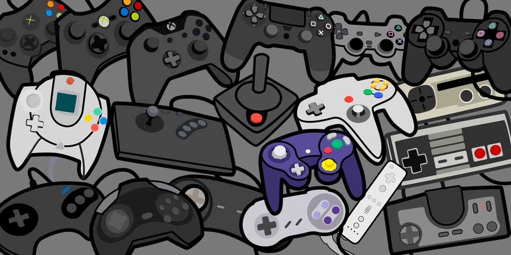

I was born in Princeton Hospital just over 18 years ago on April 26th at 4:16 pm. When I was young, I was in a fairly peculiar school program, which resulted in both me and my family moving around a lot for the first four or so years of my life before we settled down in Columbus New Jersey. It was here in Columbus that I lived out my childhood up until the moment I entered High School. I won't say that my childhood was inherently bad, but I will say that I had my fair share of experiences that have stuck with me, affecting my day-to-day life. Elementary school was a mixed bag of experiences, but I do know that I had my fair share of negative experiences. My Middle School experience was shaky at best, and is a period in my life that I do not look back on fondly, for numerous reasons. High school has also been a mixed bag of sorts, with my Freshman year being an extension of what happened throughout Middle School, despite me changing schools due to being evicted from our apartment. Sophmore year I was able to get my bearings together a bit more than I did Freshman year, since that year was fairly turbulent considering all that had happened, but Sophmore year I was able to adjust to my surrounding a bit more, and so by Junior year and my Senior year I had more or less finish adjusting to this new enviornment.
Most of the time I am a fairly laid back person with strong convictions and a high attention to the level to the point of near perfectionism. I thoroughly enjoy designing things, whether it is making a sketch, designing something online, writing stories or poems, developing a program, etc. Beyond that there is not much else, I usually play video games or hang out with my friends whenever I am not busy doing school work (which often takes up the majority of my free time). If I have a large chunk of time available, I may binge watch a show or two, but that does not as often as I would have Freshman year (back then I binge-watched shows incessantly).

Home | About Me | Clubs And Activities | Hobbies | My Family |